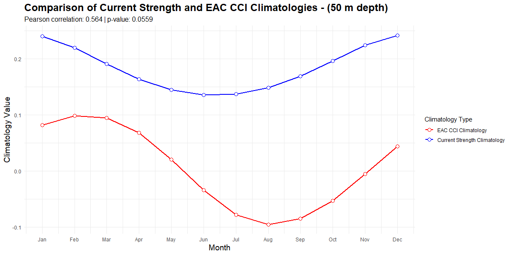
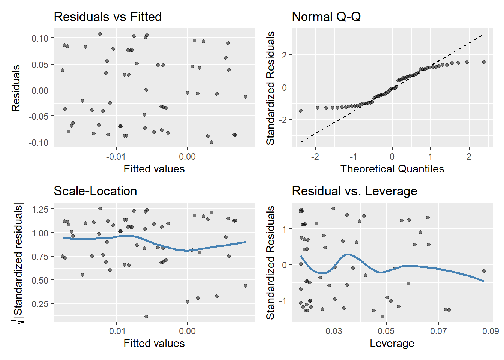

Warning: package 'tidyverse' was built under R version 4.5.1
── Attaching core tidyverse packages ──────────────────────── tidyverse 2.0.0 ──
✔ dplyr 1.1.4 ✔ readr 2.1.5
✔ forcats 1.0.0 ✔ stringr 1.5.1
✔ ggplot2 3.5.2 ✔ tibble 3.2.1
✔ lubridate 1.9.4 ✔ tidyr 1.3.1
✔ purrr 1.0.4
── Conflicts ────────────────────────────────────────── tidyverse_conflicts() ──
✖ dplyr::filter() masks stats::filter()
✖ dplyr::lag() masks stats::lag()
ℹ Use the conflicted package (<http://conflicted.r-lib.org/>) to force all conflicts to become errors
library(marginaleffects)
Warning: package 'marginaleffects' was built under R version 4.5.1
library(gglm)
Warning: package 'gglm' was built under R version 4.5.1
Results
Climatology comparison
The climatologies of the Index and the Mean Monthly Strength had a significant correlation between them (Pearson correlation = 0.628, p = 0.0286).

Climatology comparison between EAC CCI and Mean Monthly Strength
Scatterplot of the climatologies
Relationship between Index values and Mean Monthly Strength
The raw values of the two were compared, however there was not a strong correlation between the two (Pearson = 0.136, p = 0.31)
Scatterplot of Index values against Mean Monthly strength values
To further explore the relationship between the output of the Index and the calculated mean monthly strength values, multiple linear regression models were calculated.
Raw: EAC strength vs. copepod index
# data wrangling# Extract data sourcesraw_data <-readRDS(file.path("var", "raw_data_list.rds"))raw_strength_data <- raw_data$raw_strength_dataraw_index_data <- raw_data$raw_index_data# combine raw data valuescomb_raw_data <- raw_strength_data %>%full_join(raw_index_data, by ="date") %>%# inner join to remove NA valuesmutate(month =month(date) # extract month value ) %>%rename(mean_strength = mean_vel) %>%filter(!is.na(mean_strength) &!is.na(eac_cci))head(comb_raw_data)
The overall model was statistically significant, F(21, 94) = 6.128, p < 0.001, explaining approximately 48.4% of the variance in the dependent variable (R² = 0.5779, adjusted R² = 0.486).
Residuals were symmetrically distributed with a standard error of 0.08567 (df = 94), ranging from -0.223 to 0.214, suggesting that the model does not under or overfit.
A second regression was conducted to remove the effect of the interaction between data source and month.
# drop the interaction termraw_data_model2 <-lm(value ~ data_source + month, data = comb_raw_data_long)summary(raw_data_model2)
This model was also statistically significant, F(11, 104) = 7.973, p < 0.001, explaining approximately 40% variance in the dependent variable (R² = 0.458, adjusted R² = 0.4).
The main effect of data source was statistically significant (β = 0.1199, t = 6.995, p < 0.001).
Residuals were symmetrically distributed with a standard error of 0.09233, ranging from -0.181 to 0.188.
To assess whether the interaction between month and the source of data significantly improves the model fit, an analysis of variance (ANOVA) was conducted comparing two nested models:
Model 1: included main effects of data_source and month, as well as their interaction (month:data_source).
Model 2: included only the main effects of data_source and month.
# compare the two models anova(raw_data_model, raw_data_model2, test ="F")
Analysis of Variance Table
Model 1: value ~ data_source * month
Model 2: value ~ data_source + month
Res.Df RSS Df Sum of Sq F Pr(>F)
1 94 0.68984
2 104 0.88656 -10 -0.19672 2.6806 0.006254 **
---
Signif. codes: 0 '***' 0.001 '**' 0.01 '*' 0.05 '.' 0.1 ' ' 1
The comparison revealed that Model 1 provided a significantly better fit to the data than Model 2, F(10, 94) = 2.68, p = 0.006.
This suggests that the seasonal trends differs between the index and the strength values.
Diagnostics of Model 1 show that the values have a fairly normal distribution. There is however, an unusual point in the leverage plot.
# look at model 1gglm(raw_data_model)

A plot showing the model’s predicted values for different months and data sources, overlaid with actual raw data points using jitter to visualize the model’s fit to the observed data.
# compare the two models anova(raw_data_model_log, raw_data_model_log2, test ="F")
Analysis of Variance Table
Model 1: log1pvalue ~ data_source * month
Model 2: log1pvalue ~ data_source + month
Res.Df RSS Df Sum of Sq F Pr(>F)
1 94 0.63279
2 104 0.80914 -10 -0.17636 2.6198 0.007436 **
---
Signif. codes: 0 '***' 0.001 '**' 0.01 '*' 0.05 '.' 0.1 ' ' 1
The model with the interaction included explains significantly more of the variation in the data.
Using the AIC, the two best models of the log-transformed data and the non-log-transformed data were compared to determine whether the log-transformed data provides a better explanation.
# model to compare the anomalies of the Index and the Strength valuesanomaly_model <-lm(value ~ anomaly_type * month, data = combined_anomaly_data_long)summary(anomaly_model)
The model was not statistically significant, F(21, 94) = 1.47, p = 0.1081, and explained only a 7.9 %of the variance in the Index anomalies (R² = 0.247, adjusted R² = 0.079).
The residuals were approximately symmetrically distributed, with a standard error of 0.0851, and ranged from -0.223 to 0.214.
Neither anomaly type, month, nor their interaction had a significant effect on value.
# model to compare the anomalies of the Index and the Strength valuesanomaly_model2 <-lm(value ~ anomaly_type + month, data = combined_anomaly_data_long)summary(anomaly_model2)
Call:
lm(formula = value ~ anomaly_type + month, data = combined_anomaly_data_long)
Residuals:
Min 1Q Median 3Q Max
-0.209424 -0.060854 -0.005372 0.053024 0.205331
Coefficients:
Estimate Std. Error t value Pr(>|t|)
(Intercept) 0.0124426 0.0625019 0.199 0.843
anomaly_typestrength_anom -0.0147743 0.0162741 -0.908 0.366
month3 0.0491919 0.0669352 0.735 0.464
month4 -0.0078910 0.0657291 -0.120 0.905
month5 -0.0855983 0.0692846 -1.235 0.219
month6 0.0159744 0.0678847 0.235 0.814
month7 0.0111450 0.0657291 0.170 0.866
month8 0.0069701 0.0669352 0.104 0.917
month9 0.0007711 0.0692846 0.011 0.991
month10 -0.0228236 0.0692846 -0.329 0.743
month11 0.0100528 0.0678847 0.148 0.883
month12 0.0026514 0.0662487 0.040 0.968
Residual standard error: 0.08764 on 104 degrees of freedom
Multiple R-squared: 0.1163, Adjusted R-squared: 0.02287
F-statistic: 1.245 on 11 and 104 DF, p-value: 0.2675
The model was not statistically significant, F(11, 104) = 1.245, p = 0.2675, and explained only 2.3 % of the variance in the Index anomalies (R² = 0.116, adjusted R² = 0.023).
The residuals were approximately symmetrically distributed, with a standard error of 0.0851, and ranged from -0.209 to 0.205.
gglm(anomaly_model)
gglm(anomaly_model2)
North vs South
# load north and south datacci_data_n <-readRDS(file.path("var", "eac_cci_north.rds"))samples_n <- cci_data_n$samplesrda_fit_n <- cci_data_n$rda_fitlm_fit_n <- cci_data_n$lm_fitclimatology_n <- cci_data_n$climatologymonth_data_n <- cci_data_n$month_data # monthly average Index valuecci_data_s <-readRDS(file.path("var", "eac_cci_south.rds"))samples_s <- cci_data_s$samplesrda_fit_s <- cci_data_s$rda_fitlm_fit_s <- cci_data_s$lm_fitclimatology_s <- cci_data_s$climatologymonth_data_s <- cci_data_s$month_data # monthly average Index value